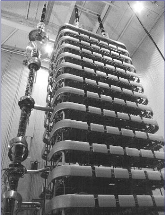

Power electronics
This article is about the technology of power electronics.
For the musical genre, see power electronics (music).
An HVDC thyristor valve tower 16.8 m tall in a hall at Baltic Cable AB in Sweden
A battery charger is an example of a piece of power electronics.
A PCs power supply is an example of a piece of power electronics, whether inside or outside of the cabinet.
Power electronics is the application of electronics to the control and conversion of electric power.
The first high-power electronic devices were made using mercury-arc valves. In modern systems, the conversion is performed with semiconductor switching devices such as diodes, thyristors, and power transistors such as the power MOSFET and IGBT. In contrast to electronic systems concerned with the transmission and processing of signals and data, substantial amounts of electrical energy are processed in power electronics.
